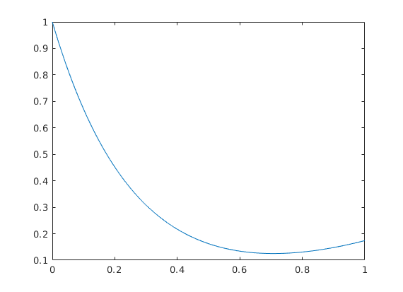

function main
clc
[xsol, ysol] = taylor(0,1,@fexp,1,0.01);
plot(xsol,ysol);
end
function [xsol, ysol] = taylor(x,y,fexp,xstop,h)
if size(y,1) > 1
y = y';
end
xsol = zeros(2,1);
ysol = zeros(2,length(y));
xsol(1,1) = x;
ysol(1,:) = y;
k = 1;
while x < xstop
h = min(h,(xstop-x));
d = feval(fexp,x,y);
hh = 1;
for j = 1:4
hh = hh*h/j;
y = y + d(j,:)*hh;
end
x = x+h;
k = k+1;
xsol(k,1) = x;
ysol(k,:) = y;
end
end
function d = fexp(x,y)
d = [
x^2-4*y;
2*x-4*x^2+16*y;
2-8*x+16*x^2-64*y;
-8+32*x-64*x^2+256*y;
];
end
